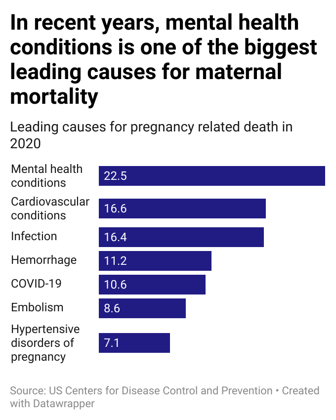

Maternal Deaths in the U.S. Remain High, While Most Are Preventable
Mental Health Emerges as Leading Cause of Maternal Deaths in the US, Racial Gaps and Systemic Failures Growing

In recent years, the United States has seen one of the worst maternal mortality rates in its recent history. The most recent provisional data from The Centers for Disease Control and Prevention published in April shows that the numbers went up again, reversing the slight development from previous years. In 2023, there were 18.6 deaths for every 100,000 live births while in 2024, it went up to 19 deaths.
Since 2020, mental health has become the leading cause of maternal deaths in the U.S., surpassing heart problems and severe bleeding, which were previously the top risks. Nearly one in four maternal deaths is now linked to mental health challenges.
According to the CDC, these deaths include suicides, drug overdoses, and poisonings tied to substance use. They also include other cases where maternal death review teams found mental health played a role.
Dr. Sheila Marcus, a psychiatrist and a medical director at Michigan Clinical Consultations & Care, comments that the mental health crisis among pregnant and postpartum women has become a national emergency. "Mental health conditions now lead to the highest number of maternal deaths, in part because issues like drug overdoses and suicide often go undiagnosed or untreated,” says Dr. Marcus.
Black women are hit the hardest. In 2023, they died from pregnancy-related causes at a rate of 50.3 deaths per 100,000 live births, more than three times the rate for white women. This gap highlights deep, long-standing inequities in access to quality care and other causes such as lack of resources. Dr. Marcus comments, “Many of the issues such as trauma, lack of resources, poverty, leading to stress, depression, PTSD, suicide and that is horrible. Horrible.”

Harvard health policy expert Alecia McGregor warns that, along with healthcare disparities affecting women of color, many hospitals are shutting down obstetric units across the U.S.
"Every year, more hospital obstetric units close, and it's no surprise that these closures are hitting communities of color the hardest, given the backdrop of racial residential segregation," she said.
What’s especially troubling is that more than 80 percent of these deaths were preventable. In a country that spends billions on healthcare, that points to serious flaws in the system. CDC suggests that better prenatal and postpartum care is crucial, along with improved screening for chronic conditions like high blood pressure. Hospitals need standardized emergency protocols and better mental health services for new mothers.
Moreover, extending care beyond the traditional six-week checkup could save lives, as many deaths occur weeks or months after delivery. The CDC also points to the urgent need to address racial disparities, with Black and Indigenous women facing much higher risks. Simple warning sign education and better coordination between healthcare providers could make the difference between life and death for mothers.
But in reality, things are far from perfect. The report from the University of Minnesota Rural Health Research Center, shows that nearly 60% of rural counties in the U.S. no longer have hospitals that offer obstetric care. Especially underprivileged communities suffer the most from it.
As the nation faces these challenges, tackling healthcare inequalities, improving access to quality care, and focusing on preventing deaths remain crucial in protecting maternal health in all communities.